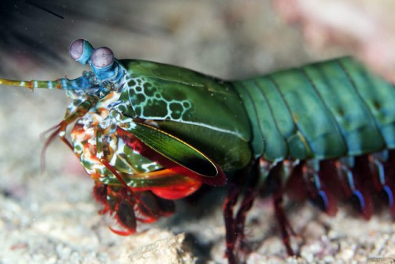

Fatos sobre o Stomatopoda
Mais conhecida como Lagosta-boxeadora ou Lacraia-do-mar, a Stomatopoda (Odontodactylus
scyllarus) está entre os animais mais violanetos do mundo. Tudo isso graças a sua supercavitação, um fenômeno hidronamico que é produzido quando um objeto se move a
uma grande velocidade em um fluído liquido. Ela pode ser
separada em dois grupos, de acordo com a morfologia das patas: o grupo das esmagadoras(smashres)
e das perfuradoras(speares).
| Reino | Filo | Subfilo | Classe | Subclasse | Ordem |
|---|---|---|---|---|---|
| Animalia | Arthropoda | Crustacea | Malacostraca | Hoplocarida | Stomatopoda |
Curiosidades
Stomatopoda esmagadoras

Ela possui duas patas na parte dianteira que, quando acionadas, são capazes de disparar um golpe com a mesma aceleração de um disparo de uma arma do calibre 22 e
força de impacto de 60 kg/cm3. Isso tudo em menos de 1/3.000 de segundo.
Essa força esmagadora é a responsável pelo seu título de "lagosta-boxeadora" e é capaz de facilmente quebrar a carapaça de um caranguejo, as conchas duras e calcificadas de gastrópodes ou até mesmo quebrar o vidro reforçado de
um aquário.
Stomatopoda perfuradoras
Perfura a presa com as projeções pontiagudas localizadas no dáctilo, último segmento da garra.